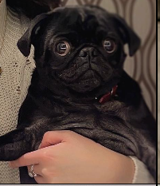
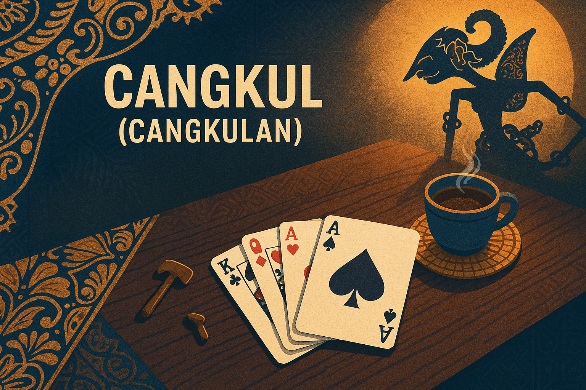

Traditional Indonesian follow‑suit card game • aka Minuman
Rules & How to Play
Quick Start (TL;DR)
Players: 3–5 is standard (2+ works with house rules).
Deal: 7 cards each. Put the rest face‑down as the stock.
Lead: Player left of dealer leads any card.
Follow suit: Each player must play the same suit if possible.
Cangkul (dig): Can’t follow suit? Draw from stock until you can, then immediately play that card.
Highest card of the led suit takes the trick and leads next. No trumps.
First to empty their hand wins the hand. Keep playing to crown the last player with cards as the loser (optional).
Components
1× standard 52‑card deck (🂡–🂲). Aces high by default.
Joker optional (see variants).
♥ Hearts♦ Diamonds♠ Spades♣ Clubs
Setup
Choose a dealer. Shuffle and deal 7 cards to each player.
Place the remaining deck face‑down as the stock.
Play proceeds clockwise. The player left of the dealer leads the first card.
Turn Structure
Lead any card (suit of your choice) if it’s your lead.
Follow suit: Each subsequent player must play a card of that suit if they have one.
Cangkul (Dig):
If you can’t follow suit, draw the top card of the stock.
If it matches the required suit, you must immediately play it.
If not, add it to your hand (hidden) and keep drawing until you find the suit, then play it.
Take the trick: The highest card of the led suit wins the trick. The winner leads any card to start the next trick.
When the stock runs out: If you can’t follow suit and there are no cards left to draw, you simply pass. At the end of that incomplete trick, anyone who passed must pick up cards from the middle (see Edge Cases) before play continues.
Edge Cases (End‑of‑Stock Rules)
If a player can’t follow suit and the stock is empty, they don’t play to that trick (they pass).
After that trick ends, players who passed must pick up the cards from the middle, in order of who passed first (clockwise), until all those cards are taken.
The player who played the highest card to that (incomplete) trick leads again.
Winning & Scoring
Winner of the hand: first to play their last card.
Find the loser (optional): continue playing as each player goes out; the last player still holding cards is the loser.
Match scoring (house rule): Play to N wins, or award 1 point for each player you beat; lowest score loses, highest wins—your table, your call.
Card Rank
High → Low
Notes
A K Q J 10 9 8 7 6 5 4 3 2
Aces high by default. No trumps.
Use a Joker? See Variants ↓
Variants & House Rules
Joker variant
Add 1 Joker (53‑card deck).
Joker always wins the trick it’s played to.
If Joker is led, the next player sets the suit by playing any card, which others must follow.
Some tables require you to play the Joker if you can’t follow suit (no drawing while holding Joker). Agree before play.
Player counts
3–5 ideal. Many groups also enjoy 4–7; for 2‑player, deal 7–10 each and keep a healthy stock.
Continue to find the loser
After the first player goes out, play on until one person remains with cards. Crown them the round’s keledai (donkey) for laughs.
Example Turn
A leads ♥7. B plays ♥Q, C ♥10. D has no hearts.
D draws: ♣4 (no), ♦9 (no), ♥3 (yes) → must play it now.
B’s ♥Q is highest and takes the trick. B leads next, any suit.
Later, the stock is empty. C leads ♠5. D can’t follow and must pass. After the trick ends, D picks up cards from that center pile before the next lead.
Strategy Hints
Lead short suits early to strand opponents into digging.
Count suits—notice who keeps drawing on a suit; lead it again to pressure them.
Preserve your lone high cards (A/K) to seize the lead when it matters.
When stock is low, lead suits you think others don’t have; forced passes become pickups after the trick.
Glossary (EN ⇄ ID)
Cangkul = “dig” (draw until you can follow suit)
Buang kartu = discard / play a card
Ikuti jenis = follow suit
Kartu stok = stock / draw pile
Trik = trick (set of one card per player in a round)
Gilir = turn / move
Habis kartu = out of cards (you win!)
Sample table banter: “Tidak punya sekop—cangkul!” (I don’t have spades—dig!)
Printable Quick Reference
Deal 7 each, rest face‑down → stock.
Left of dealer leads any card.
Follow suit; if you can't, draw until you can, then play it immediately.
Highest of suit led takes the trick; winner leads next.
Out of cards = you win. Keep playing to tag the last holder as loser (optional).
Joker (optional): always wins; if led, next card sets the suit.
Meet the Card Masters

Gimli
Master of Tricks

Eleanor
Guardian of the Deck
"We used to look up at the sky and wonder at our place in the stars. Now we just look down, and worry about our place in the dirt."